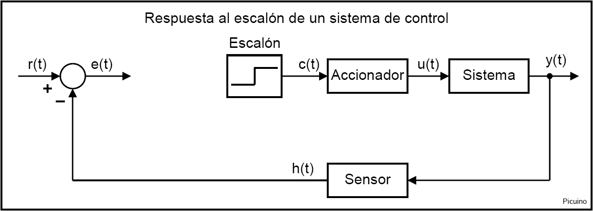
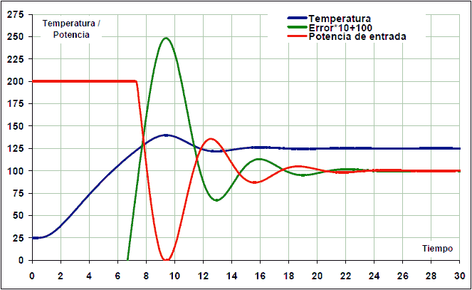
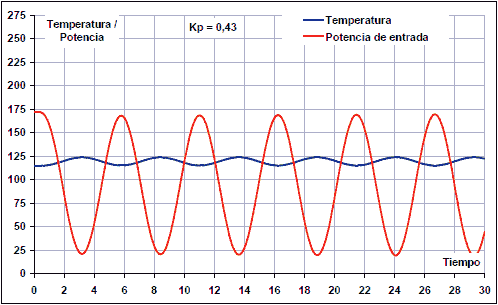
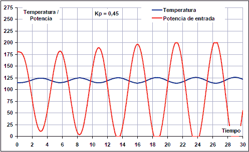
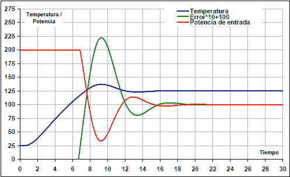

Método de Ziegler-Nichols¶
El método de Ziegler-Nichols permite ajustar o "sintonizar" un controlador PID de forma empírica, sin necesidad de conocer las ecuaciones de la planta o del sistema controlado. Estas reglas de ajuste propuestas por Ziegler y Nichols fueron publicadas en 1942 y desde entonces es constituyen uno de los métodos de sintonización más ampliamente difundido y utilizado.
Los valores propuestos por este método intentan conseguir en el sistema realimentado una respuesta al escalón con un sobrepulso máximo del 25%, que es un valor robusto con buenas características de rapidez y estabilidad para la mayoría de los sistemas.
El método de sintonización de reguladores PID de Ziegler-Nichols permite definir las constantes o ganancias proporcional, integral y derivativa (Kp, Ki y Kd) a partir de la respuesta del sistema en lazo abierto o a partir de la respuesta del sistema en lazo cerrado. Cada uno de los dos ensayos se ajusta mejor a un tipo de sistema.
Sintonización por la respuesta al escalón¶
Este método de sintonización se adapta bien a los sistemas que son estables en lazo abierto y que presentan un tiempo de retardo desde que reciben la señal de control hasta que comienzan a actuar.
Para poder determinar la respuesta al escalón de la planta o sistema controlado, se debe retirar el controlador PID y sustituirlo por una señal escalón aplicada al accionador.

En la siguiente figura se muestra la modificación que hay que realizar al sistema de control en lazo cerrado para convertirlo en un sistema en lazo abierto que responda a una señal escalón, retirando el controlador PID:
{kind=link}
En la imagen siguiente se puede ver representado en rojo la entrada escalón al accionador o señal c(t). En azul se representa la salida del sistema medida por el sensor o señal h(t). El escalón de entrada c(t) debe estar entre el 10% y el 20% del valor nominal de entrada. Como puede apreciarse, la respuesta del sistema presenta un retardo, también llamado tiempo muerto, representado por T1.

Para calcular los parámetros se comienza por trazar una línea recta tangente a la señal de salida del sistema (curva azul). Esta tangente está dibujada en la imagen con una recta a trazos.
El tiempo T1 corresponde al tiempo muerto. Este es el tiempo que tarda el sistema en comenzar a responder. Este intervalo se mide desde que la señal escalón sube, hasta el punto de corte de la recta tangente con el valor inicial del sistema, que en este caso es el valor 25ºC
El tiempo T2 es el tiempo de subida. El tiempo 2 comenzará donde la línea tangente corta al valor inicial de salida (25º a los 2 segundos) y terminará donde la línea tangente corta al valor final de salida (225º a los 14 segundos).

Respuesta al escalón. El tiempo 2 comienza a continuación de T1 y termina al alcanzar la recta tangente el valor máximo de salida, en este caso 225ºC.¶
Además de estos dos tiempos característicos también hay que calcular la variación de la señal escalón dX y la variación de la respuesta del sistema dY.
La variación dX corresponde al escalón de la señal de control. En el ejemplo que aparece en las imágenes, la variación de la señal escalón corresponde a dX = 5 voltios de señal de control c(t).
La variación dY del sistema debido a la señal escalón que hemos introducido, corresponde en el ejemplo a dY = 200ºC medidos por el sensor h(t) en cierta cantidad de voltios.
A partir de estos valores se puede calcular la constante del sistema Ko:
Ko = (dX * T2) / (dY * T1)
Y a partir de la constante Ko se pueden calcular los parámetros del controlador PID con acción solo proporcional (P), proporcional e integral (PI), proporcional y derivativa (PD) o proporcional integral y derivativa (PID):
Control Kp Ki Kd P Ko PI 0,9*Ko 0,27*Ko/T1 PD 1,6*Ko 0,60*Ko*T1 PID 1,2*Ko 0,60*Ko/T1 0,60*Ko*T1
La constante Kp corresponde a la ganancia proporcional, Ki es la ganancia integral y Kd es la ganancia derivativa.
Ejemplo de sintonización de PID con la respuesta al escalón¶
En el ejemplo que aparece en las imágenes anteriores se ha utilizado la simulación de un horno realizada con una hoja de cálculo. También está disponible un simulador de un sistema de calefacción con dos calderas.
Simulador de control de temperatura:Thermal Control. Versión 0.11
Para calcular los parámetros del sistema se fuerza una respuesta al escalón fijando la señal de control en 0 voltios con un escalón de 5 voltios. El sistema responde cambiando desde 25 grados centígrados (0.25V) a 225 grados centígrados (2.25V). Los tiempos son los que aparecen en las gráficas anteriores, con lo cual los valores de la curva de respuesta del sistema son los siguientes:
dX = 5 - 0 = 5 voltios
dY = 2,25 - 0,25 = 2 voltios
T1 = 2,2 - 1 = 1,2 segundos
T2 = 13,8 - 2,2 = 11,6 segundos
A partir de estos valores se pueden calcular los parámetros del regulador PID:
Ko = (dX * T2) / (dY * T1) = (5 * 11,6) / (2 * 1,2) = 24,2
Control Kp Ki Kd P 24,2 PI 21,8 5,44 PI 38,7 17,4 PID 29,0 12,1 17,4
Después de introducir los valores Kp, Ki y Kd en el PID se obtiene la siguiente respuesta:
{kind=link}
Ahora se pueden ajustar a mano los parámetros del PID para conseguir una respuesta un poco más estable. Se ha aumentado la ganancia derivativa y reducido la integral para reducir las oscilaciones:
Kp = 28
Ki = 10
Kd = 21
Como resultado, el sistema se estabiliza ahora en 12 segundos:

En todos los casos se ha limitado la respuesta integral de forma que valga cero si el error es mayor de 40ºC. Este modo de funcionamiento de la ganancia integral es llamado anti-windup y sirve para evitar un sobrepico excesivo en la respuesta. Este sobrepico se produce porque el control integral aumenta mientras el accionador se encuentra saturado, de forma que acumula un valor demasiado alto y no ajustado a la respuesta real del sistema.
Sintonización por la ganancia crítica en lazo cerrado¶
Este método no requiere retirar el controlador PID del lazo cerrado. En este caso solo hay que reducir al mínimo la acción derivativa y la acción integral del regulador PID. El ensayo en lazo cerrado consiste en aumentar poco a poco la ganancia proporcional hasta que el sistema oscile de forma mantenida ante cualquier perturbación. Esta oscilación debe ser lineal, sin saturaciones. En este momento hay que medir la ganancia proporcional, llamada ganancia crítica o Kc, y el periodo de oscilación Tc en segundos.

Una vez medidos estos dos valores, se pueden calcular los parámetros del controlador PID con acción solo proporcional (P), proporcional e integral (PI), proporcional y derivativa (PD) o proporcional integral y derivativa (PID):
Control Kp Ki Kd P 0,50*Kc PI 0,45*Kc 0,54*Kc/Tc PD 0,80*Kc 0,075*Kc*Tc PID 0,59*Kc 1,18*Kc/Tc 0,075*Kc*Tc
La constante Kp corresponde a la ganancia proporcional, Ki es la ganancia integral y Kd es la ganancia derivativa.
Ejemplo de sintonización de PID con la ganancia crítica¶
Vamos a realizar una sintonización del sistema térmico simulado anteriormente:
Simulador de control de temperatura:Thermal Control. Versión 0.11
La primera operación será la de anular las ganancias derivativa e integral:
Kd = 0
Ki = 0
A continuación se fija una temperatura de trabajo en la referencia y se aumenta la ganancia proporcional hasta conseguir una respuesta oscilatoria mantenida.
Con una ganancia proporcional Kp = 0,40 la respuesta todavía está amortiguada:

Al aumentar la ganancia proporcional hasta Kp = 0,43 se obtiene una respuesta con oscilaciones mantenidas:
{kind=link}
Al aumentar la ganancia hasta Kp = 0,45, las oscilaciones crecen en el tiempo, por lo que la ganancia sería demasiado alta.
{kind=link}
En este caso, por lo tanto, la ganancia crítica y el periodo son:
Kc = 0,43
Tc = 21/4 = 5,3 s
A partir de estos valores se calculan los parámetros del controlador PID:
Control Kp Ki Kd P 0,215 PI 0,195 0,044 PI 0,344 0,169 PID 0,254 0,096 0,169
Como puede comprobarse, los valores son semejantes a los valores obtenidos anteriormente con el método de la respuesta al escalón. Las diferencias se deben a que este sistema no es lineal y por lo tanto tiene una respuesta oscilatoria distorsionada cuando se busca la ganancia crítica.
Introduciendo los valores anteriores en el controlador PID se obtiene la siguiente respuesta del sistema térmico con controlador PID:
{kind=link}
En este caso también se puede terminar de afinar el regulador PID a mano para conseguir una respuesta un poco más estable.
Referencias¶
[1] Ogata, Katsuhiko. Ingeniería de Control Moderna. Tercera edición. Editorial Prentice Hall.
[2] Ogata, Katsuhiko. Sistemas de control en tiempo discreto. Segunda edición. Editorial Prentice Hall.